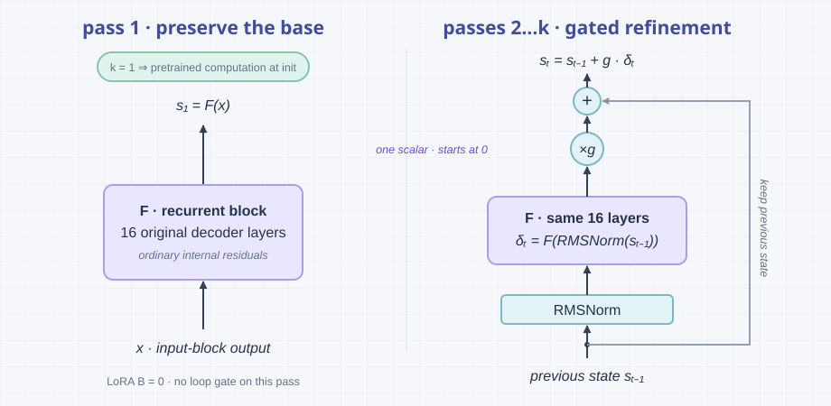
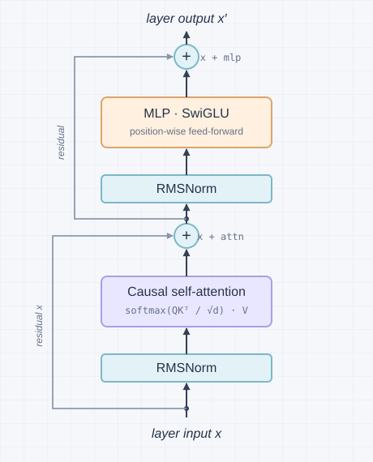
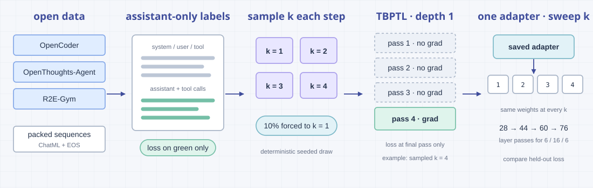
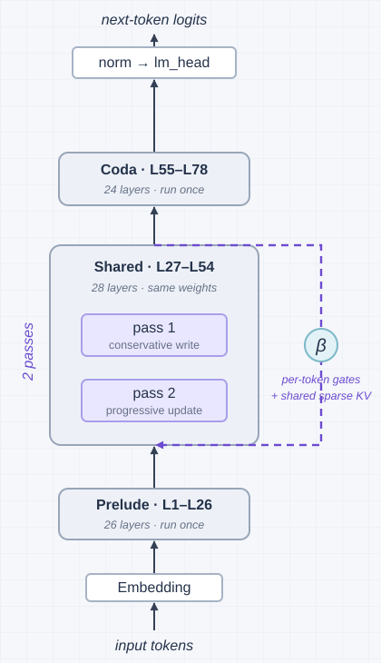

A standard transformer stores a stack of layers and runs each one once. This repository asks a different question: can we take a pretrained coding model, run its middle layers again with the same weights, and let a single checkpoint choose more compute at inference time? The experiment keeps the pretrained model intact at initialization, then learns whether extra passes are useful.
Interactive looped architecture
Tap any part of the diagram to see what it does.
Figure 1 | One shared block, not k copies. Read bottom to top. For the 28-layer Qwen2.5-Coder-1.5B configuration, the partition is 6 / 16 / 6. The brown return path is used only between passes. Changing k changes executed depth, not the number of stored decoder layers. The moving dot illustrates state flow; it is not a single-token approximation of attention.
The loop starts as the pretrained model
Naively inserting a recurrence changes the computation even at k=1, which is a difficult way to adapt a pretrained model. Here, pass 1 runs the original input, recurrent, and output partitions without an extra loop-boundary normalization or gate. With zero-initialized LoRA B matrices, that makes the initial k=1 computation match the base to about 1e-6 loss difference in the repository’s check.

scroll sideways to inspect the full figure
Figure 2 | The gate belongs outside the block. F denotes all 16 shared decoder layers. On later passes, the block proposes δₜ; one learned scalar g scales that proposal and the model adds it to the previous state. Since g starts at zero, all values of k initially produce the same output.
passes 2…k: δₜ = F(RMSNorm(sₜ₋₁))
sₜ = sₜ₋₁ + g · δₜ
This is deliberately not GLM’s per-token progressive gate, and it is not a gate on every attention or MLP residual. It is one scalar applied once per later recurrent pass. The reported smoke runs use --no-inject-input. Setting inject_input=True (the constructor default) changes the later-pass input to RMSNorm(sₜ₋₁ + x) and is a separate ablation.
k=1 means one pass through the adapted checkpoint—not the original pretrained checkpoint.Inside F, the layers stay ordinary
Every one of the 16 decoder layers retains the base model’s pre-norm attention, SwiGLU MLP, RoPE, and residual adds. Weight sharing happens between passes; the 16 layers within one pass are still different layers.
The trainer can add LoRA to projections, but it does not replace the decoder layer with a new gated-attention architecture.

What we are actually training
One training step draws a loop count, runs that many passes, and applies the next-token loss only after the final pass. A 10% override forces k=1, retaining a direct training signal for the shallow computation. With TBPTL depth 1, earlier passes run under no_grad; only the last pass builds a backward graph.

scroll sideways to inspect the full figure
Figure 3 | The experimental loop around the model loop. The TBPTL column shows a sampled k=4 step. Evaluation reopens one saved adapter and changes only k, so the sweep measures elastic depth without retraining a separate model for every row.
| Base / partition | Qwen2.5-Coder-1.5B · 28 layers · 6 input / 16 recurrent / 6 output |
|---|---|
| Trainable pieces | LoRA matrices, loop-boundary RMSNorms, and the scalar loop gate. Pretrained linear weights are frozen. |
| Trainer LoRA default | Rank 16, α=16; q/k/v/o and SwiGLU projections in all three partitions. A run can select different blocks explicitly. The planned L4 notebook uses rank 32. |
| Loop sampling | k ∈ {1,2,3,4} · 10% override → k=1 |
| Memory recipe | TBPTL depth 1, gradient checkpointing, packed sequences, assistant-only labels, gradient accumulation. |
| Data | OpenCoder educational instructions, OpenThoughts-Agent trajectories, and R2E-Gym software-engineering trajectories. |
More passes are a dial, not a free win
The completed local experiment is intentionally small: Qwen2.5-Coder-0.5B, LoRA, 200 micro-batches of batch 1 × 2,048 tokens—409,600 raw token presentations and 50 optimizer updates. Gradient accumulation does not multiply the token count again. The plot shows the final 5 / 14 / 5 adapter on four sequences from the random held-out evaluation used in the run log. Lower cross-entropy is better. The vertical scale is zoomed to make the tiny differences visible.
scroll sideways to inspect the full figure
Figure 4 | A tiny k=2 gain, then a reversal. Final 5 / 14 / 5 adapter, four held-out sequences (batch size 1). The dashed segment spans the missing final k=3 measurement; it is not a measured value. Differences of about 1e-3 on this small split should be read as pipeline diagnostics, not robust evidence of a scaling win.
At step 100 of the same run, the sweep was 1.1563 / 1.1556 / 1.1549 / 1.1548 for k=1…4. The final evaluation no longer shows monotonic improvement. That change is worth showing rather than hiding: the loop is contributing very little at this budget, and more passes are not automatically better.
What the ablations say
| Variant | What changed | Observed result |
|---|---|---|
| Exact Dory recurrence | Normalize/re-inject from the first pass; no base-preserving passthrough. | k=1 best; additional loops degraded loss. The pretrained computation was already out of distribution at initialization. |
| Base-preserving + zero gate current | Pass 1 preserves the base; later passes add g·F(norm(s)), with no input injection. | Stable. Tiny k=2 gain in the final 5 / 14 / 5 evaluation; deeper passes did not help. |
| Forced gate 0.05 | Start with the refinement visibly active instead of starting as a no-op. | Actively harmful at this scale. The optimizer reduced the gate from 0.050 to 0.019 and k=1 won. |
| Smaller recurrent block | Partition 6 / 10 / 8 instead of 5 / 14 / 5 on the 0.5B model. | Same qualitative outcome: tiny k=2/3 gains, no deeper gain. Partition size was not the immediate bottleneck. |
Next experiments, kept distinct from completed ones
- next Run the prepared 1.5B / roughly 16M-token Colab experiment and repeat the same-adapter
ksweep. - planned Compare a non-looped LoRA baseline at the same data and trainable-parameter budget.
- planned Test Dory-style input injection, higher-rank LoRA or full fine-tuning, and per-source coding/agentic evaluation.
- planned Add difficulty-aware loop routing. The training code currently samples
k; it does not yet implement the paper’s difficulty curriculum.
Do not conflate this recurrence with GLM 5.4

GLM 5.4 is a useful large-scale reference point, not a description of this code. Z.ai reports 26 prelude layers, 28 layers run twice, and 24 coda layers: 106 passes from 78 stored layers.
Its per-token gated progressive updates, hybrid KV cache, and sparse attention-index reuse solve different problems. This repository uses one scalar refinement gate, has no such loop-aware KV system, and its naive generation path currently uses no KV cache.
| This repo | Upcycle a small Qwen coder · variable k=1…4 · base-preserving scalar-gated residual · TBPTL · LoRA. |
|---|---|
| GLM 5.4 | Continued training at frontier scale · fixed two-pass middle · per-token progressive gates · hybrid KV + sparse-index reuse. |